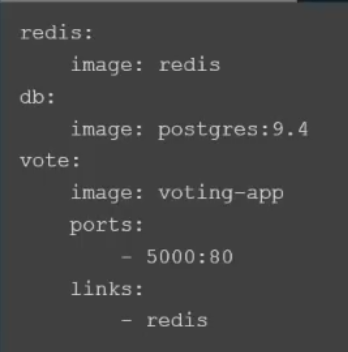
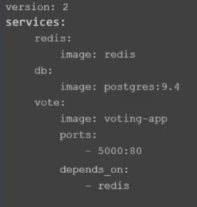
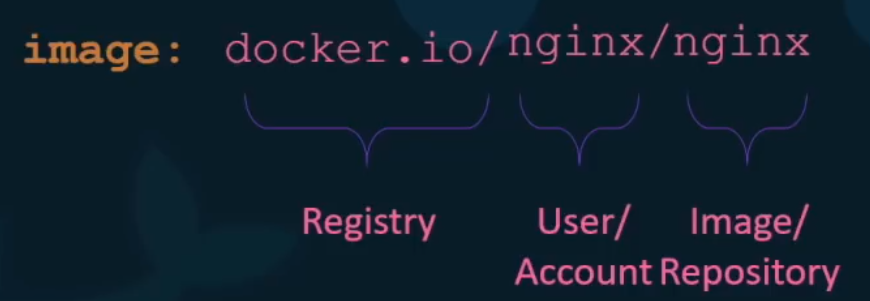

| Tecnologia | Sintaxis | Descripcion |
|---|---|---|
| Docker | docker version | Muestra la version y otra informacion sobre el docker instalado. |
| Docker | docker start [nombre_imagen] |
Inicia un container que no este corriendo pero aun no se haya destruido (estado exited). A diferencia de docker run, que corre un nuevo contenedor, este comando inicia un contenedor que ya existe. |
| Docker | docker exec [nombre_imagen] [comando] |
Ejecuta un comando dentro de un contenedor que ya esta corriendo. Al correrlo con el flag -it y el comando sh o bash, te abre la terminal dentro del container |
| Docker | docker pull [nombre_imagen] | Descarga e instala desde dockerhub la imagen especificada pero no la ejecuta. |
| Docker | docker push [nombre_imagen] | Sube a dockerhub la imagen especificada. |
| Docker | docker tag [id_imagen] [nombre_imagen]:[tag] | Renombra una imagen. Al nombre de las imagenes se les puede agregar un tag (version), luego de los dos puntos |
| Docker | docker build [path_to_dockerfile] -t [image_tagname] |
Crea en local una imagen de docker Primero se debe crear el Dockerfile para luego correr el build. image_tagname : sigue el siguiente formato [account_name]/[app_name] Ejemplo: rzlams/my-app |
| Docker | docker network create [network_name] | Crea una nueva network (por defecto bridge) con el nombre especificado |
| Docker | docker ignore file | Cumple la misma funcion que el .gitignore, incluso el nombre del archivo sigue el mismo formato .dockerignore |
| Docker |
docker run --name [nombre_container] docker run -d [nombre_imagen]:[tag] docker run -it [nombre_imagen] sh docker run -p [external_port]:[internal_port] docker run -v [external_path]:[internal_path]:ro docker run -e [key]=[value] docker run --entrypoint [comando] docker run --env-file [file_path] docker run image --network=none docker run --cpus=.5 ubuntu docker run --memory=100m ubuntu |
Ejecuta una imagen instalada. Sino consigue la imagen la descarga desde dockerhub y la instala. --name : setea el nombre del container. Esto se puede usar igual que como se usa el container id -d : activa el modo 'detach', es decir, ejecuta el contenedor en segundo plano sin ocupar la consola. -it : activa el modo interactivo en la terminal. Si le agregas el sh al final te deja usar el bash dentro del contenedor -t : activa el modo 'atach'. Por ejemplo: con -it se puede mostrar el prompt que imprime un container al ejecutarse, si pide algun input -p : mapea un puerto externo con uno interno del container -v : volume mapping, similar al mapeo de puertos este comando mapea una carpeta. Esto es util para servicios que necesiten persistir datos, como mysql. Se puede especificar varios volumenes y soporta trabaja con especificidad en caso de tener que hacer mapping de una subcarpeta. Es recomendable agregarle el sufijo :ro (readonly) al path del source code para evitar que docker lo modifique -e : permite establecer variables de entorno --env-file : carga un archivo con las variables de entorno. El argumento puede ser ./.env tag : se refiere a la version (el default es latest) los tags soportados se encuentran en la descripcion de la imagen en dockerhub --entrypoint : reescribe el ENTRYPOINT del Dockerfile --network : el network por defecto es bridge. Tambien puede ser seteado a "none" o "host" --cpus : limita la capacidad del CPU que utiliza docker. Por ejemplo: .5 es equivalente a 50% --memory : limita la cantidad de memoria usada por docker. Por ejemplo: 100m es equivalente a 100 megas |
| Docker | docker attach [container_id] |
Sale del modo detach, es decir, ocupa la consola con la ejecucion del container especificado. El container_id pueden ser solo los cinco primeros caracteres del id. |
| Docker | docker logs [container_id] | Muestra los logs de un container que este corriendo en detached mode |
| Docker | docker inspect [container_id] | Muestra toda la informacion del container en formato JSON |
| Docker | docker ps -a |
Lista los containers que estan corriendo y alguna informacion basica sobre ellos. -a : muestra todos los containers, los que estan corriendo y los que no. |
| Docker | docker images | Lista las imagenes disponibles, aunque no se hayan ejecutado. |
| Docker | docker stop [container_id o container_name] | Detiene la ejecucion del container especificado |
| Docker | docker rm [container_id o container_name] | Remueve el container especificado. El mensaje de exito que devuelve es el nombre del container. |
| Docker | docker rmi [image_name] |
Remueve la imagen especificada. Se deben detener todos los containers de la image (o que dependan de ella) que se esten ejecutando para poder borrarla. |
| Docker | Dockerfile: |
Sigue el formato INSTRUCTION ARGUMENT. Todo los que esta a la izquierda es una instruccion y lo siguiente un
argumento FROM : es la imagen base. Puede ser un sistema operativo u otra imagen basada en un sistema operativo WORKDIR : el path donde se van a poner los archivos de la instruccion COPY dentro del container COPY : copia los archivos de mi local al contenedor. El formato es: COPY [path_local] [path_container] CMD : tiene dos posibles formatos, comando argumento (como en la terminal) o como JSON, ["palabra1", "palabra2"] Es el comando que corre al iniciar el container y el que determina si el proceso del cointainer esta activo o no (al deternerse el proceso que inicia el comando, se para el container tambien). ENTRYPOINT : el formato es en JSON, ["palabra1", "palabra2"]. Igual que CMD corre al iniciar el container. La diferencia es que los argumentos que se pasen al "docker run" se le anexan al final, mientras que los mismos argumentos reescriben por completo CMD. Tanto ENTRYPOINT como CMD se pueden usar juntos. En ese caso le anexa el valor de CMD al de ENTRYPOINT |
| Docker | docker-compose up -d --build |
Es el equivalente de docker run para un docker-compose file. Incluso el -d es detached igual --build : Este flag fuerza a correr el build. Si se tiene un build en el fila, al correr de nuevo el comando solo busca la imagen especificada, no hace el build de nuevo. Lo puedes correr varias veces y solo levanta los servicios que se cayeron, los que ya estan corriendo los deja asi. |
| Docker | docker-compose down | Es el equivalente a docker stop pero para todos los servicios descritos en el docker-compose file |
| Docker |
docker compose file:


|
- Para la version 2 en adelante se debe especificar la version al inicio del docker-compose.yml - A partir de la version 2 docker compose: - Los servicios se definen bajo la key "services" - Crea una conexion bridge para todos los containers, lo que elimina la necesidad de crear un network y links para comunicarlos. - En cambio incluye "depends_on", donde se puede especificar el contenedor del cual depende para que corra los contenedores en el orden adecuado - La version 3 tiene soporte para docker swarn - La key "networks" en la raiz permite definir varias conexiones. Luego con la key "networks" dentro de cada servicio, se puede asociar ese servicio a las conexiones que se especifiquen |
| Docker | Nomenclatura del nombre de una imagen |  |